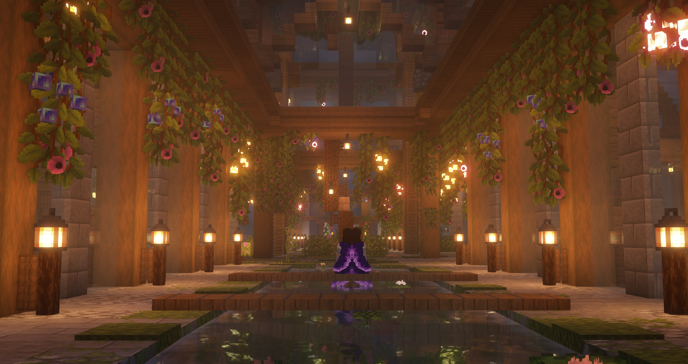

Mod List

I currently play on 1.21.1, and use Quilt as my modloader. It is a fork of the Fabric modloader, and can load most Fabric mods. Fabric and Quilt are faster and more flexable than Forge, but NeoForge is getting pretty close to Fabric & Quilt's quality, I've heard.
Performance Mods
Basically Required

Nice to Have


QOL Mods
Basically Required


Nice to Have

Accelerated Decay
Camera Utils

Component Viewer
Continuity

[EMF] Entity Model Features

[ETF] Entity Texture Features
FabricSkyboxes
Falling Leaves
Freecam (Modrinth Edition)
JourneyMap

JourneyMap Web Map

Lighty

Model Gap Fix
Not Enough Animations

Particular

RP Renames

Shulker Box Tooltip

3D Skin Layers

Trade Cycling

Visuality


Data Packs
I have a custom datapack that adds some custom recipes. This pack is constantly evolving, but there are dozens of packs on the internet that change recipes.
World Generation Packs
the order of world gen packs is important


Other Packs

Custom Roleplay Data (datapack)

Sit Down

Dyable Books
- folder structure tweaks were made to make it work with 1.21

Random Mob Sizes
- minSize: 8000 (80%)
- maxSize: 10000 (100%)

Stackable Shulker Boxes

No Enderman Grief

No Creeper Grief
Various Vanilla Tweaks packs
- Mini Blocks
- More Mob Heads
- Player Head Drops
- Durability Ping
Resource Packs
wip
These packs are in order of how I have them loaded. That means, the first listed here is at the bottom of the list, the second is second from the bottom, and so on.
02
A completly custom pack focused on tweaking colors and blocks at a Biome Level

04
These packs are combined into a compound UI pack
Dark Mode by ZiYun
- has been removed from Modrinth

No Dark Inventory Overlay by SuperAnt_

Enhanced Boss Bars by Naku
05
These packs are combined into a player-focused compound pack
Quieter Minecarts from Vanilla Tweaks

Blue Phoenix Wings by Frwf
- Manually recolored to purple

Flower Crowns by TinyDaggsy
- Used to replace helmets

Islana's Armor Accessories by Islana and Lynray
- Used to replace chestplates

Minimal Armor by Quarthe
- Used to replace leggings and boots

Turtle Helmet to Snorkel by Krauzer
- Used the item texture to replace turtle helmet

Sea of Shulkers by TheSeaBlurban
- Used as a base to tweak my shulker box models

Bottled dye by Marciay
The rockets from Faithful 32x were edited to be purple instead of red
The splashtexts file was edited to a much lower amount of texts plus some personal custom ones
06
These packs are combined into a 3D items compound pack

3D Amethyst Crystals by Alkatreize
3d quartz crystals made by editing 3d-amethyst-crystals
3d emeralds made by editing 3d-amethyst-crystals

3D Bottles by Alkatreize

3D Flowers by Alkatreize

Candles Overhaul by Alkatreize

3D Buckets by Alkatreize

Strengthen Ladder by Alkatreize
3D diamonds based on the 3d amethyst pack from VanillaTweaks

Fantasy Ores by CeasrZorak

Better Lanterns by Nico4play

Cyber's Better Coral by CyberCanyon303

O'Clock by Ivango

Recreated Foliage by HakksG
07
These packs are combined into a blocks and items model and textures focused compound pack


Clean Bedrock by Leafiela

Connected Textures Extended by Scutoel

Connected Copper Grates by Lev0id

Accurate Scaffold by COPY_CANCEL

Long Grass by COPY_CANCEL

Signs Overhaul by Alkatreize

Fences Overhaul by Alkatreize

Bed Overhaul by Alkatreize

3D Rails by Alkatreize

Better Boats 1.20 by BrownOwl

New Faithful Overlays by Po3stell3d

ClearVisionGlass 32x - Faithful Addon by MintyFenix

Finn's Workshop by Finn_Demon_Cat
- Jukebox

Better Enchanting Table by Jacosvaldo

Lily Pad Overhaul by Alkatreize

Seagrass variation by Hakks

Visual Max-Stage Kelp+Vines by Hozz

Dropping Moss Carpet by Almighty Dustpan

3D crops Revamped by vexcenot

Better Crops 3D by Ensis
- Melon Vine
- Melon Block Textures
- Pumpkin Vine
- Pumpkin Block Textures

Montana's Bushier Kelp by Montanoceratops

Os' Colorful Grasses by Oslypsis

Bushy Leaves by NaiNonTheN00b1
08
These packs are combined into a mob models and textures focused compound pack

Gray's Mobs Overhaul by CanineGray
- Horses
- Villagers
- Wandering Trader
- Llamas
- Farm Mobs
- Raid Mobs
- Ender Dragon

Lanostry's foxes by Lanostry

Better Iron Golem Remastered by CmdrMCNuggets
- Classic Golem Cargo


09
This pack has a selection of Fresh Animations animations for selected mobs


Gray's Mob Overhaul x Fresh Animations by CanineGray
- Horses
- Villagers
- Wandering Trader
- Llamas
- Farm Mobs
- Raid Mobs
- Ender Dragon


51 & 52
currently undergoing a rework to use CITResewn instead of CustomModelData
may be further reworked when the new datapack and resource pack changes from the newest snapshots are stable and implemented
51
These packs are combined into a player focused CustomModelData compound pack.
this pack will be swapped back to use CIT once CITResewn has been updated to the latest version
Hats

Mushroom Cap Hat by LogMaiden

Whimsy Horns and Antlers by LogMaiden

imp horns by theworldlookswhite

Ikuyuk's Hats by ikuyuk

Tailored Hats by TristenLosey
- Plague cleric hat
- Plague doctor hat

Plague Mask by Sp0ty
Rhines' Kitsune Mask by Rhines

Rhines' Genshin Impact by Rhines
Weapons

Blades of Majestica by Eftann

Fantasy 3D Weapons by nongko

Bows to Magic Staves by nongko

Teyvat Weapon Collection by Raycifer

Abyss Lector Bow and Crossbow by Kayohi576
Shields

Nature Shield by Overgrown

Mashu Kyrielight's Shield by E8INA

Magic Staff by Pitonixrex
A red and black recolored version of Pitonixrex's magic Staff
Tools

Majestica by Eftann

steampunk pickaxe by Semil

The Soul Fire Keeper Java by SirRiesling
- Both Blue and Orange versions were used

FTM pack by MrDanny
- Copper Pickaxe
Cute/RP Items

Navia Gunbrella Cit from Genshin Impact by NightEpiphany

Umbrella Villagers by ewanhowell5195
- The textures for this pack were applied to the model from the Navia pack
52
These packs are combined into a decoration focused CustomModelData compound pack.
this pack is currently wip, and will be swapped back to CIT once CITResewn is updated to the latest version


53
This pack is a personally made alternate version of the base Dyeable Books pack for the Dyable Books datapack, using the Faithful 32x writable and written book textures